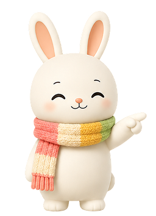
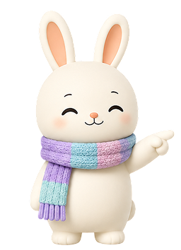
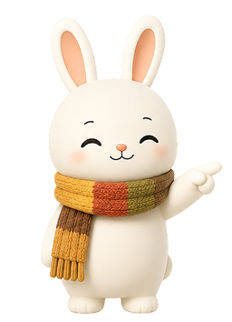
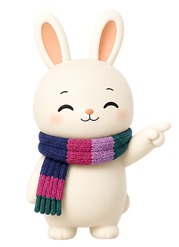

밝고 생기 넘치는 따뜻한 색상이 당신에게 잘 어울려요.
화사하고 사랑스러운 봄꽃 같은 팔레트를 만나보세요.
5단계 비교에서 일관성이 높았어요.




정반대 계열의 색은 얼굴에서 멀리, 하의나 액세서리로만 활용해보세요.
제품 클릭 시 구매 페이지로 이동
12가지 타입의 팔레트·특징·추천 아이템을 자유롭게 둘러보세요.
이 결과는 참고용이며, 개인의 취향이 언제나 먼저입니다.